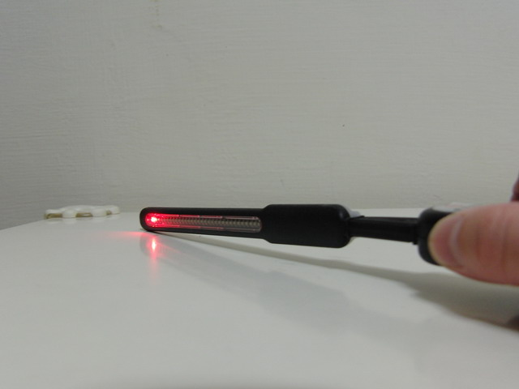
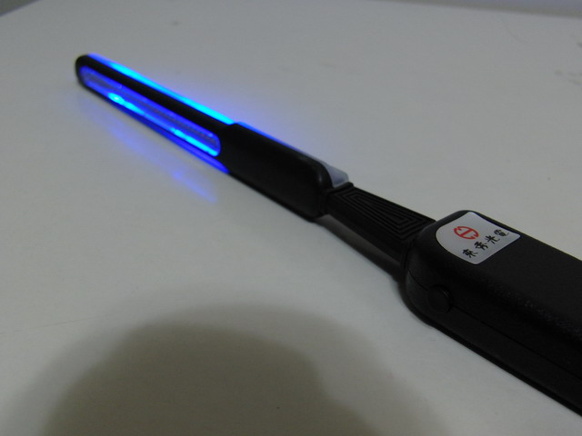
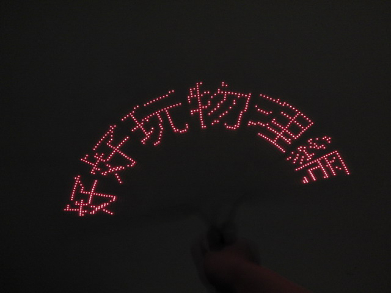
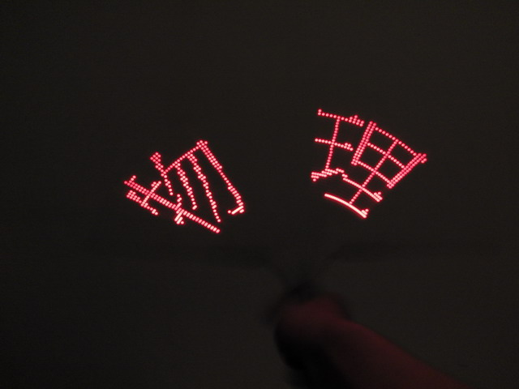
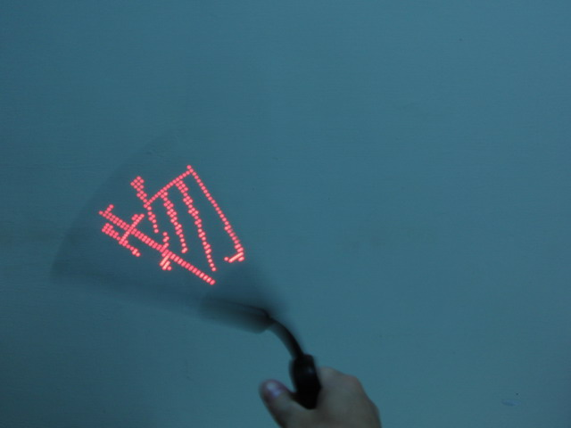

↑LED字幕棒，正面的LED，紅色。

↑背面藍色的LED純粹是裝飾用的背景。

↑用USB線連接電腦，把字幕輸入，搖晃LED棒，就會出現你要得字囉！

↑物理人，當然要寫物理囉。

↑這是利用LED快速閃爍，再配合視覺暫留造成的效果喔！
========= 感 謝 ========
感謝 師大物理系 黃福坤 教授提供可以高速錄影的相機： CASIO EX-F1，以及愛秀LED字幕棒。